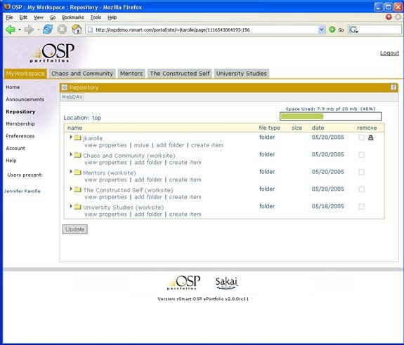

1.Select Repository (in My Workspace)
2.Describe what the repository is
•Web-based file system
•Travels with the user across CIGs
3.Relate repository to the Collectactivity
4.Expand some folders
•Show that Jennifer has a lot in her repository(needs another screen capture to illustrate)
•Show different file types, and completed forms (needs another screen capture to illustrate)
•Relate the folders to CIGs Jennifer belongs to (needs another screen capture to illustrate
•Show access to shared files in the Mentors folder (needs another screen capture to illustrate
